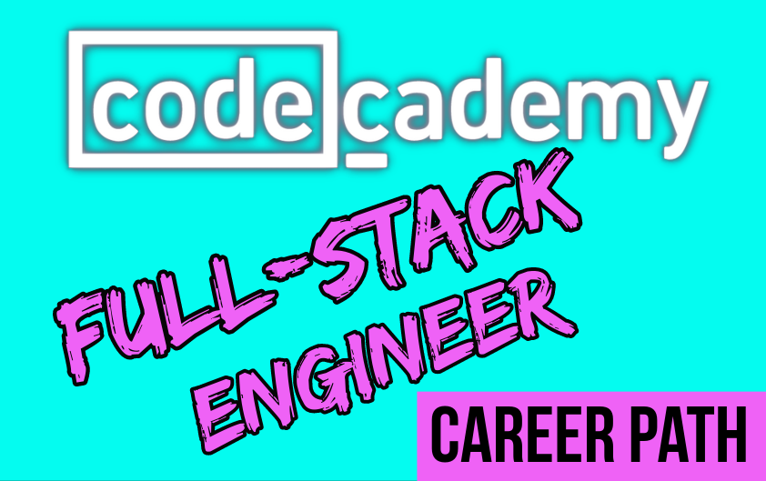
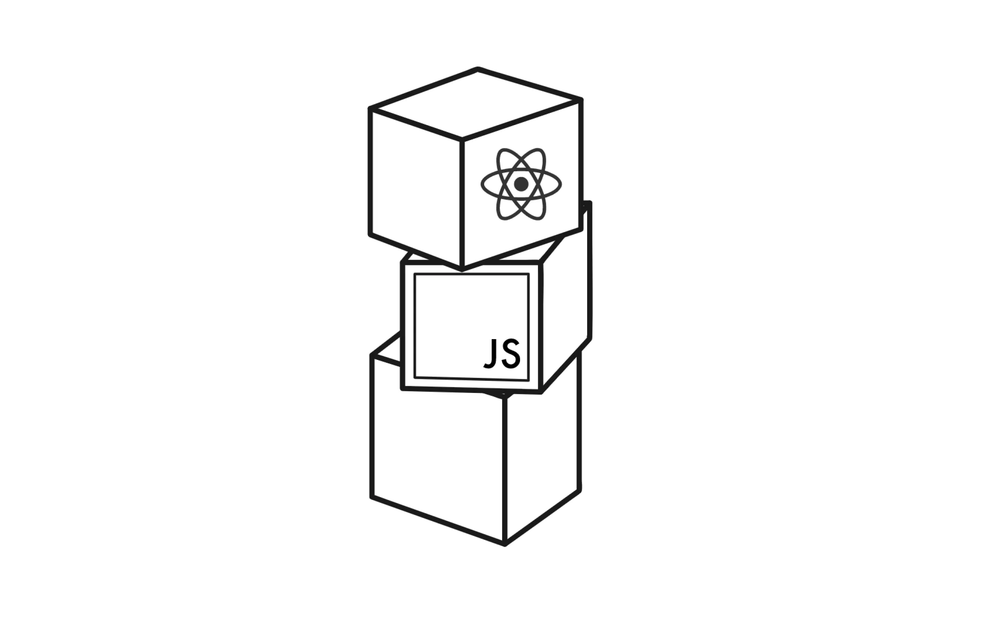

About me
Hi I'm Tommi Laakso, and am a former professional Counter-strike player, mostly known for playing in the Finnish scene for nearly two decades and eventually reaching the top.
I retired from Counter-strike in 2020 and was known for being at my best when my back was against the wall and in big games
After quitting Counter-strike I have focused on programming and inspire to be a fullstack engineer working in challenging projects.
In my freetime I like to go to the gym, read about history, world events and health
Fun fact! I've been programming for seconds!
Projects
Codecademy Fullstack course!

I'm currently in progress of completing Codecademy Full Stack Engineer course
Full Stack Open By Helsinki University!

My next project is going to be completing Helsinki Universitys Full Stack Open course
Buutti web course
I'm going to be participiating in the Buutti webpage course along when working on the latter projects!